Contents
Define time vector
Define a vector of time with equal spacing h on the interval [0, T]
close all
T = 2;
h = 0.01;
t = 0:h:T;
System model
Define a function for the state of the system at time t
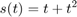
The derivative 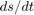 of the state equation with respect to time is
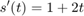
The inverse of the state equation is
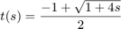
The derivative of the inverse of the state equation 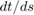 is
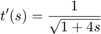
s = @(t) t + t.^2; s_inv = @(s) (-1 + sqrt(1 + 4*s)) ./ 2; dsdt = @(t) 1 + 2*t; dtds = @(s) (1/2)*(1/2)*(1 + 4*s).^(-1/2)*4; figure() subplot(2,2,1) plot(t, s(t)) xlabel('time, t') ylabel('state, s(t)') subplot(2,2,2) ss = linspace(s(0), s(T)); plot(ss, s_inv(ss)) xlabel('state, s') ylabel('t(s) = s^{-1}(t)') subplot(2,2,3) plot(t, dsdt(t)) xlabel('time, t') ylabel('s''(t)') subplot(2,2,4) plot(ss, dtds(ss)) xlabel('state, s') ylabel('t''(s)')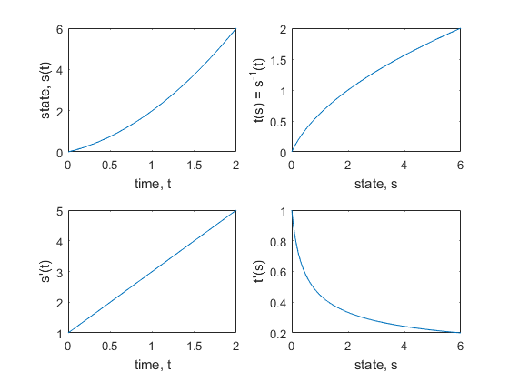
State PDF
The probability density function for the states on the interval [0,T] is
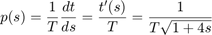
Alternatively, the pdf can be obtained as
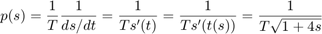
It is verified that the pdf obeys the 2nd of the Kolmogorov axioms
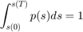
% PDF function pdf = @(s) (1/T)*(dtds(s)); pdf_Alt = @(s) (1/T)*(1./dsdt(s_inv(s))); % Verify pdf integrates to 1 intPDF = integral(pdf, s(0), s(T)) intPDF_Alt = integral(pdf_Alt, s(0), s(T))
intPDF =
1.0000
intPDF_Alt =
1.0000
Evaluate model at time vector t
Evaluate the model at time vector t and calculate histogram of system states. Normalize the histogram so that areas of bars sum to one.
% Evaluate model s_SAMP = s(t); % Histogram ds = range(s_SAMP)/25; edges = min(s_SAMP):ds:max(s_SAMP); centers = edges(1:end-1) + ds/2; N = histcounts(s_SAMP, edges); % Normalize histogram % pdf_SAMP = N/trapz(centers, N); pdf_SAMP = N/sum(N*ds); % Verify discrete pdf integrates to 1 % sumPDF = trapz(centers, pdf_SAMP) sumPDF = sum(pdf_SAMP*ds);
Validate formulation of analytical pdf
The analytical pdf solution is compared to the sample to verify the accuracy
figure() hold on bar(centers, pdf_SAMP, 1) svec = linspace(s(0), s(T), length(t)); plot(svec, pdf(svec), '-r', 'LineWidth', 2) legend('sample', 'analytical') xlabel('state, s') ylabel('probability density function, p(s)')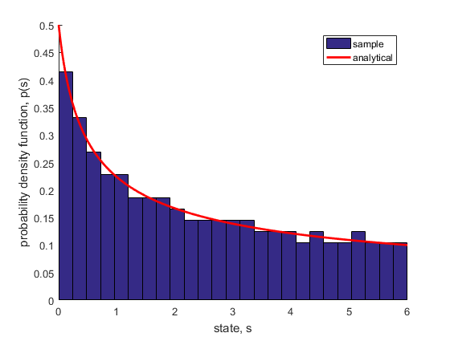
Calculate expectation of state pdf
% Expectation E_S = integral(@(s) s.*pdf(s), s(0), s(T)) % Average over time window E_S_alt = (1/T)*integral(s, 0, T) % Sample mean mean_SAMP = mean(s_SAMP)
E_S =
2.3333
E_S_alt =
2.3333
mean_SAMP =
2.3367
Calculate Fisher Information
The Fisher information is defined as
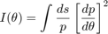
where 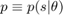. With change of variables 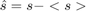 and the assumption of shift invariance the Fisher Information becomes
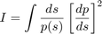
% Derivative of pdf with respect to s dpds = @(s) -2./(T*(4*s + 1).^(3/2)); % Fisher Information I = integral(@(s) (1./pdf(s)).*dpds(s).^2, s(0), s(T))
I =
0.3307